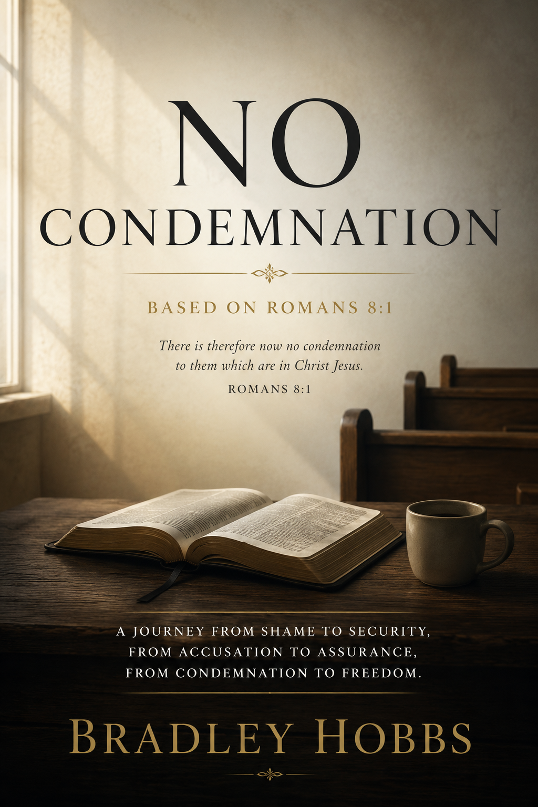

Elias Mercer has spent years believing the pressure within him was evidence of spiritual sincerity. Vigilance felt responsible, rest felt dangerous, and peace always seemed just beyond reach despite his sincere devotion to God.
As Romans 8:1 begins confronting the foundation of his inner life, Elias slowly discovers the difference between condemnation and conviction, between fear driven striving and the steady voice of the Spirit leading him toward truth.
What begins as a quiet internal struggle gradually unfolds into a deeply personal journey through shame, assurance, inherited pressure, and the difficult process of learning how to trust the grace of Jesus Christ again.
No Condemnation invites readers into an immersive story of reflection, healing, and rediscovering the freedom found in the promise that there is now no condemnation to them which are in Christ Jesus.
Many believers understand forgiveness intellectually while still living emotionally beneath fear, shame, and continual self accusation. Over time, condemnation can begin sounding responsible, mature, and even spiritual while peace slowly feels unfamiliar.
No Condemnation was written for readers carrying hidden exhaustion beneath sincere faith. Every chapter carefully explores the tension between striving for acceptance and learning to rest within the finished work of Jesus Christ.
Rather than offering performance driven answers, this story gently leads readers toward assurance, freedom, and the quiet realization that God never intended His people to live beneath continual condemnation.